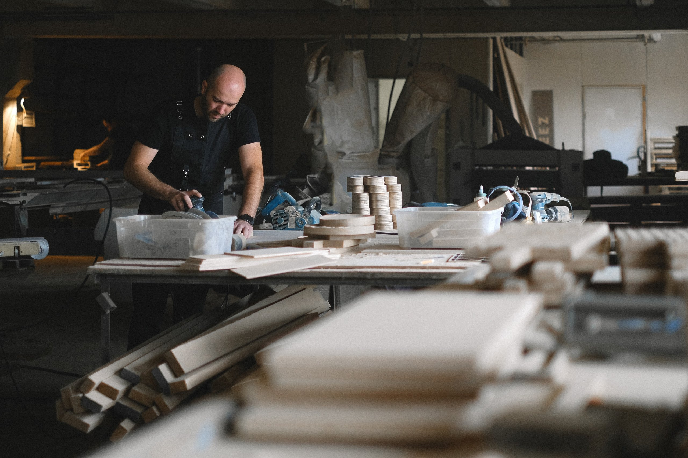
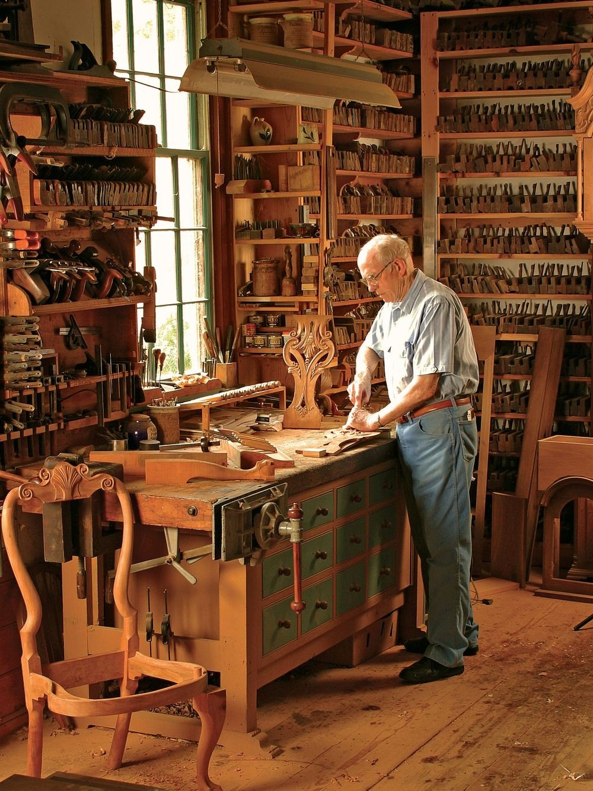
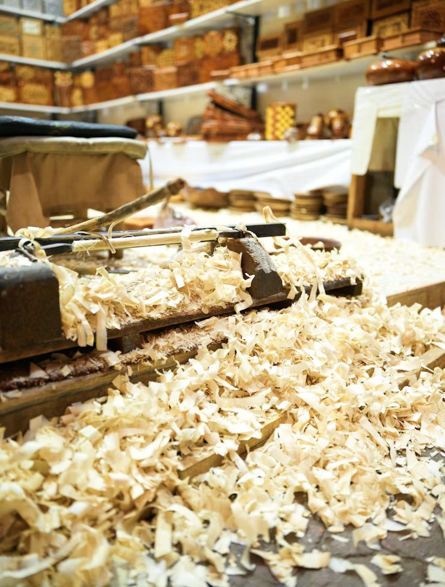
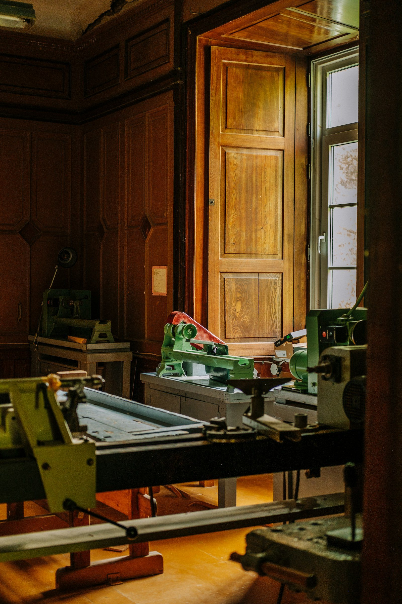
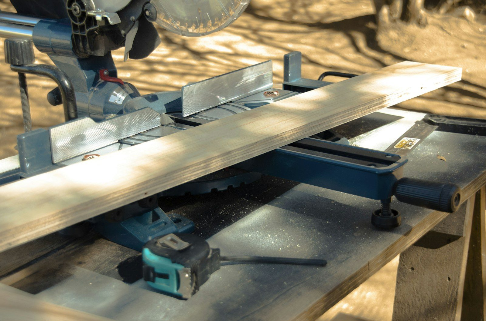
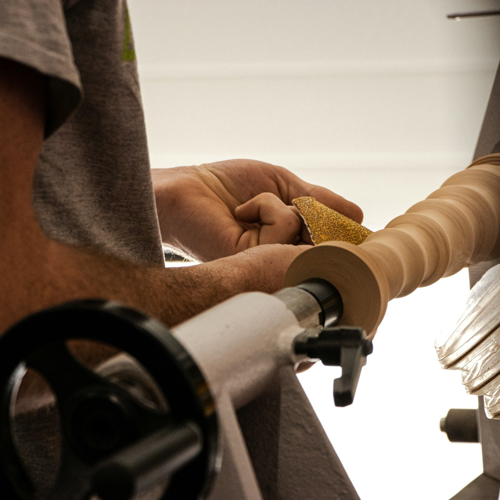
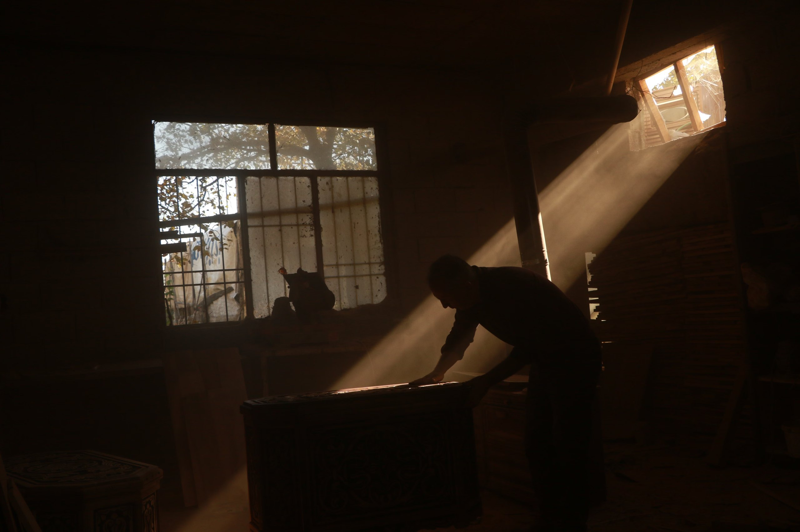

选材
看纹理，也看它适合成为怎样的物件。

Woodworker · slow made
不爱喧嚣，偏爱木纹里藏着的温度。
01 / 关于我
喜欢顺着木性下料、打磨、雕琢，不急于求成。一刨一凿，留住原木本来的质感；一榫一卯，守住老手艺的踏实。

02 / 做木头这件事
慢慢做，好好做。
把一块块普通木料，变成好用、耐看的物件。
03 / 手艺与过程
不把木头当作材料清单里的一个名称。它有纹理、有方向，也有自己的脾气。

看纹理，也看它适合成为怎样的物件。
让每一次落刀，都顺着木头原本的方向。
不急着藏起痕迹，让触感一点点变得温润。
让结构自己说话，把踏实留在看不见的地方。
04 / 留给日常
我做的并不只是摆设。它可以是一张日常坐着的小凳、一只常用的托盘、一只收起心意的木盒；用得越久，越能看见时间留下的光。
“木不言，自有心意。”
05 / 场地与设备
从一块木料到一件日常用的物件，工坊里的每道工序都有自己的节奏。设备帮忙把尺寸做准，手和眼仍要慢慢判断木纹与手感。

木质墙面、窗边的设备与光影，各有各的位置。

先看木纹，再让每一道尺寸落准。

木料在旋转间，慢慢显出它的轮廓。
配图为木工场地与设备示意，非实际工作场地。

一件好木作，从一次聊天开始
带着你的想法、尺寸和使用场景来。我们一起想想，它适合成为怎样的一件木作。